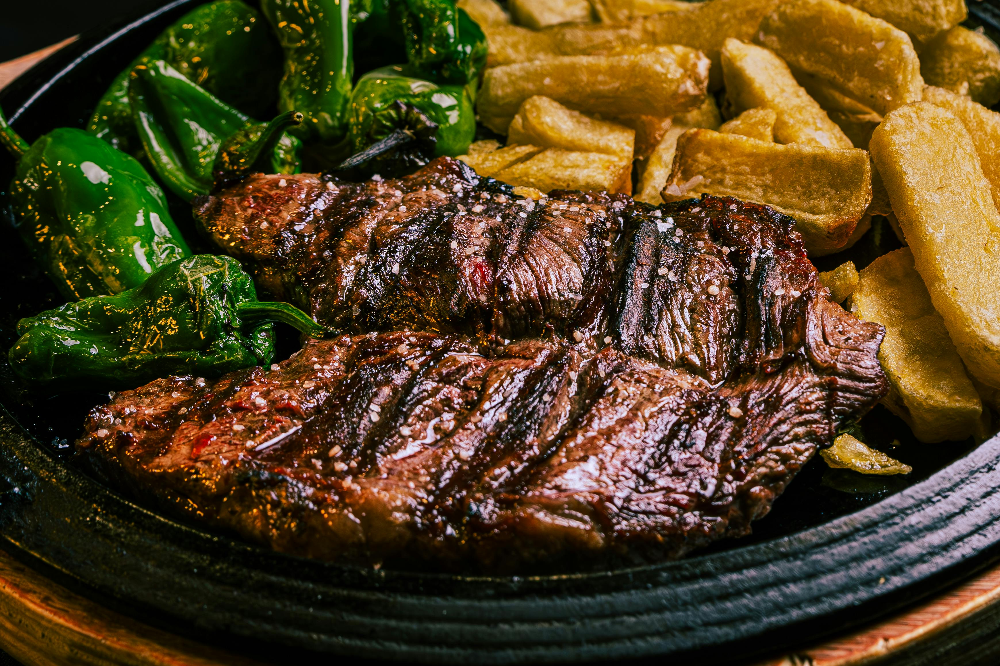

 Chef Rodrigo
Chef Rodrigo
Picanha ao Forno com Sal Grosso
Picanha suculenta assada no forno com crosta de sal grosso.
Carnes Bovinas
Brasileira
Chef Rodrigo

Strogonoff de Carne
Clássico strogonoff de carne com molho cremoso e champignons.
Carnes Bovinas
Russa
 Chef Tatiana
Chef Tatiana

Medalhão ao Molho Madeira
Medalhão de filé mignon com sofisticado molho madeira.
Carnes Bovinas
Gourmet
 Chef Antoine
Chef Antoine